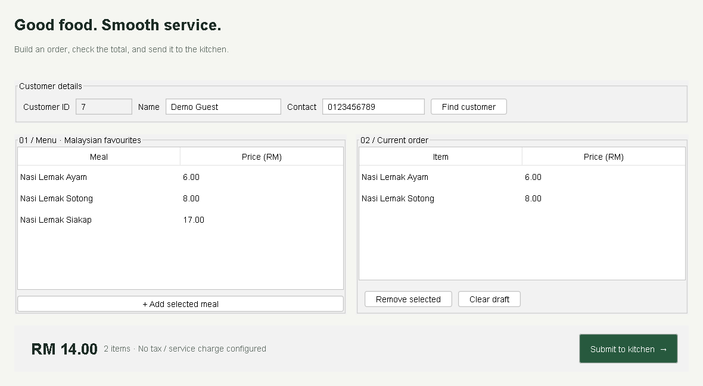

Order with confidence.
Validated customer details, a domain-backed basket, exact decimal totals, and a stored receipt. Your draft stays intact if submission fails.
JAVA DESKTOP / PORTFOLIO PROJECT
From the first order to the final plate.
A thoughtful restaurant workspace, built in Java.
Java 17+ · Windows / Linux / macOS¹
Local database included. No server to set up.
DINEFLOW / KITCHEN TICKET
01 / THE WORKSPACE
A familiar desktop application with a complete,
locally persisted service workflow.

Validated customer details, a domain-backed basket, exact decimal totals, and a stored receipt. Your draft stays intact if submission fails.
Queued, preparing, ready, served. Search the board, filter by status, and advance each ticket through permitted transitions.
A local staff directory with distinct role IDs, editable records, and transparent demonstration pay calculations.
02 / UNDER THE SURFACE
Started as group OOP coursework.
Enhanced with the care that working software needs.
Customer, order, and items use one connection. Integration tests force a late write failure and verify the rollback.
BigDecimal totals replace floating-point accumulation. Validation rejects invalid amounts and non-finite hours.
An explicit state machine and optimistic status checks prevent skipped stages and stale updates.
Maven, JUnit, Windows and Linux CI. Tagged releases ship a dependency-inclusive JAR with a SHA-256 checksum.
03 / TRY IT YOURSELF
Download the release. Open a terminal in a writable folder.
Run the JAR and start with synthetic records.
java -jar dineflow.jarH2 storage is created in ./data.
Run from the same folder to reopen your records.